Design. Edge and core are separate physical chips — never overlaid.
Within each slide, GFP− and GFP+ share the array (analogue of E14S/E15S ImageIT gates).
ADT microwell entropy filter
H_adt ≤ 8 (86.3% retained).
Dynamics from scVelo hypoxia phase plane (enter / persist / exit).3036
Cells after H≤8
430
Tumor cells after H≤8
1.25× (p=0.205)
Edge OVERLAY deep→exit enr
1.00× (p=0.699)
Core OVERLAY deep→exit enr
Chip placement
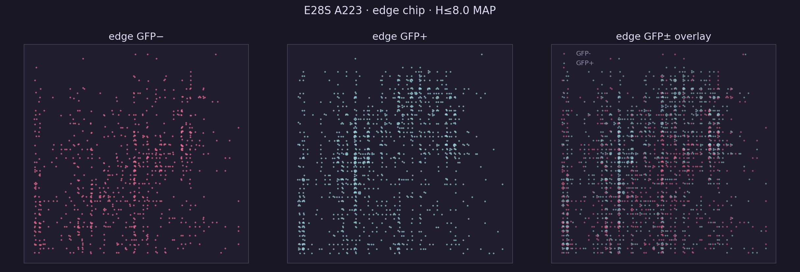
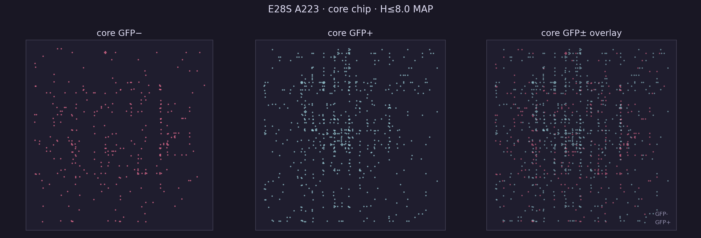
Front bridges & ribbons
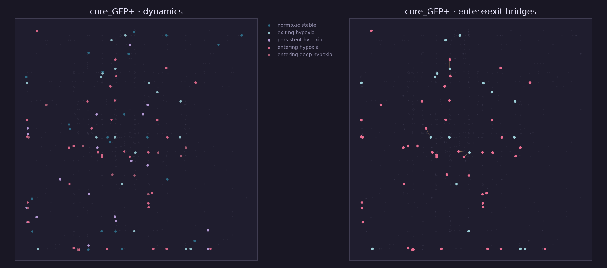
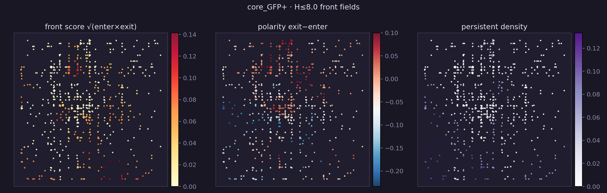
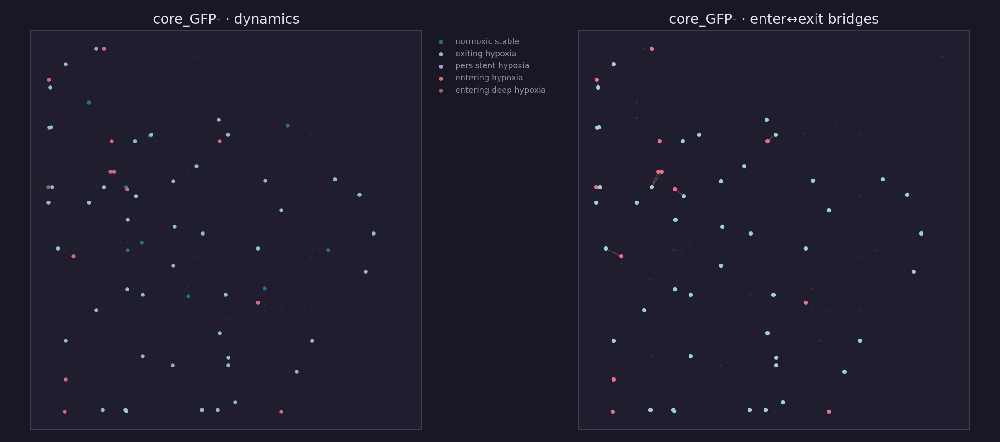
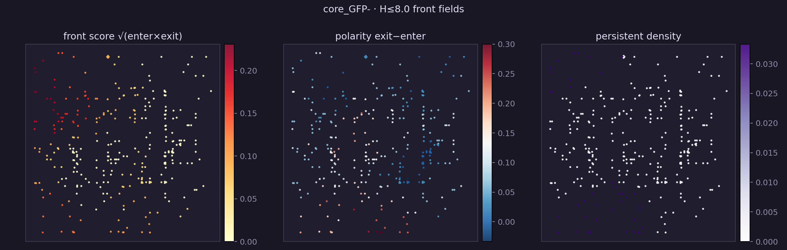
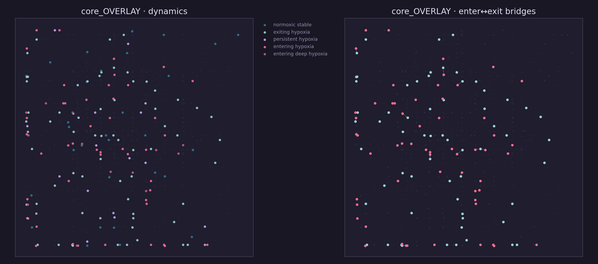
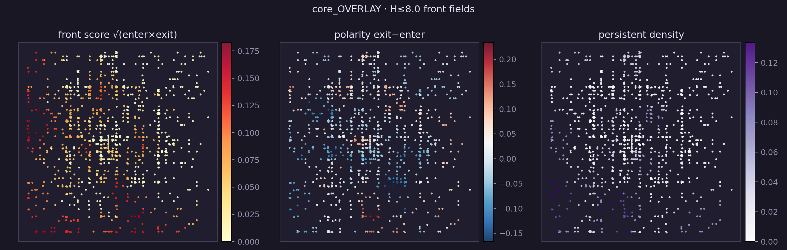
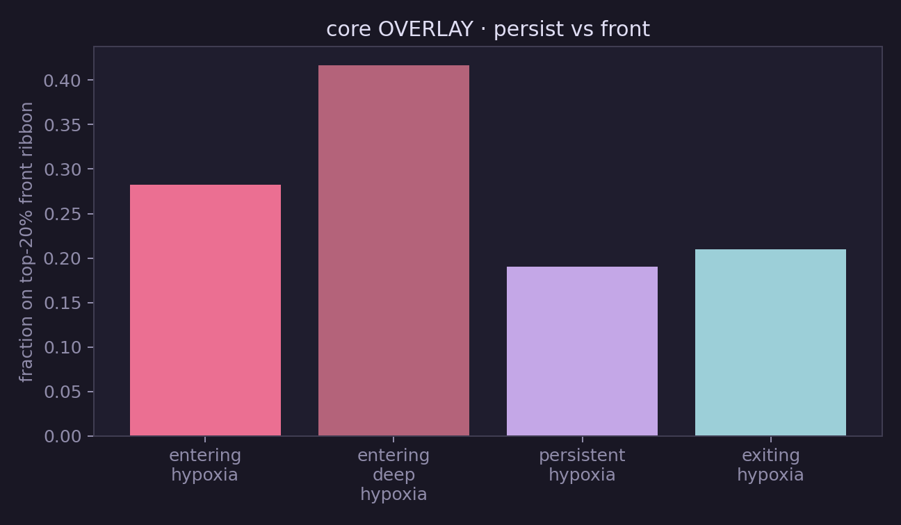
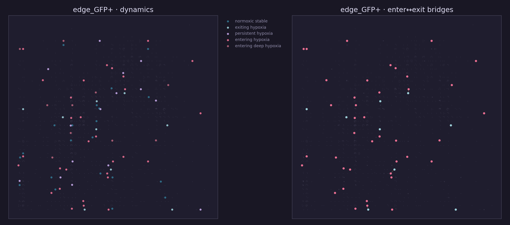
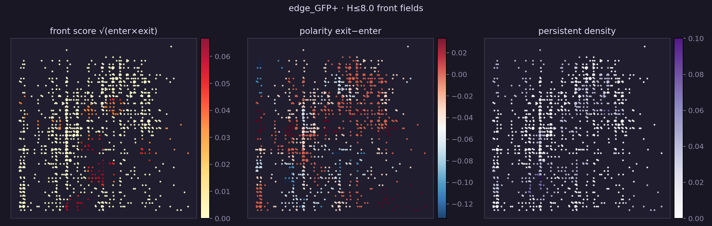
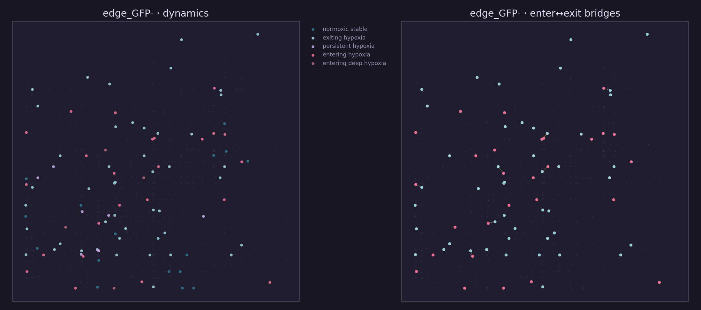
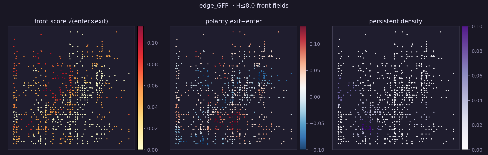
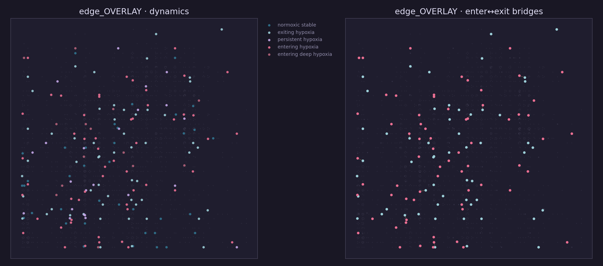
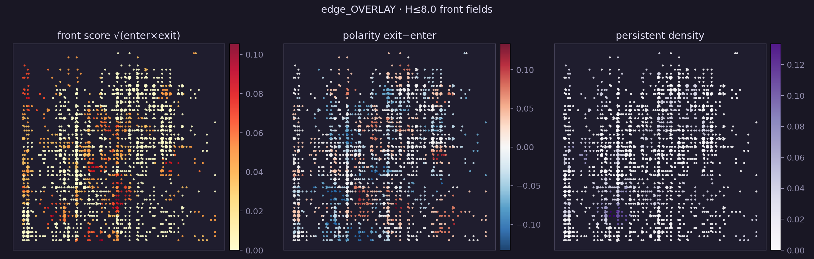
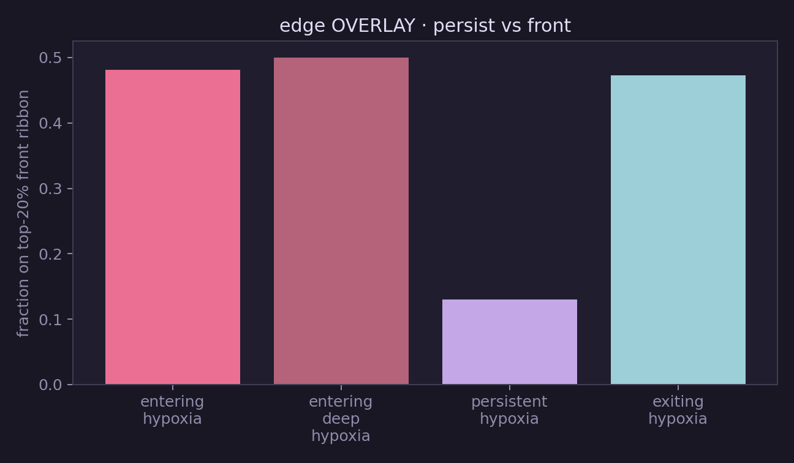
Shuffle tests
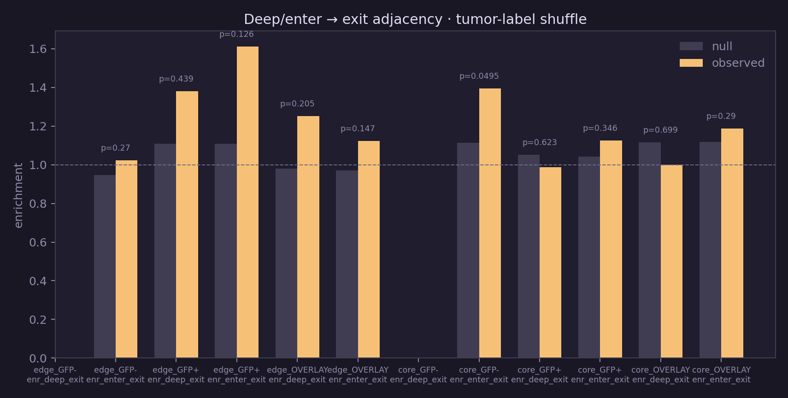
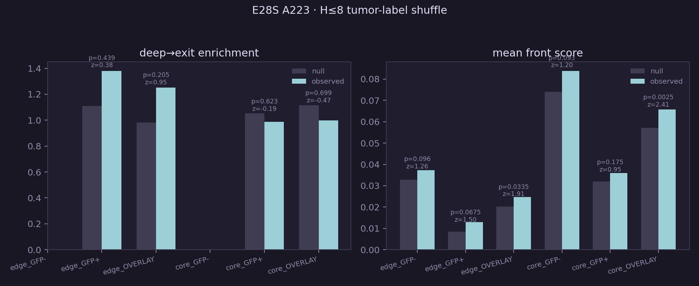
Animations
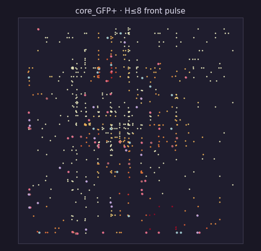
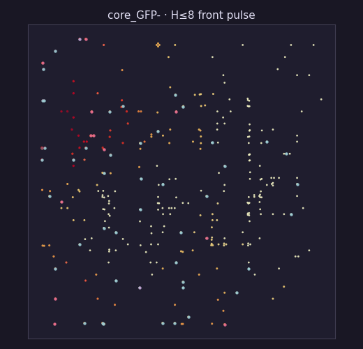
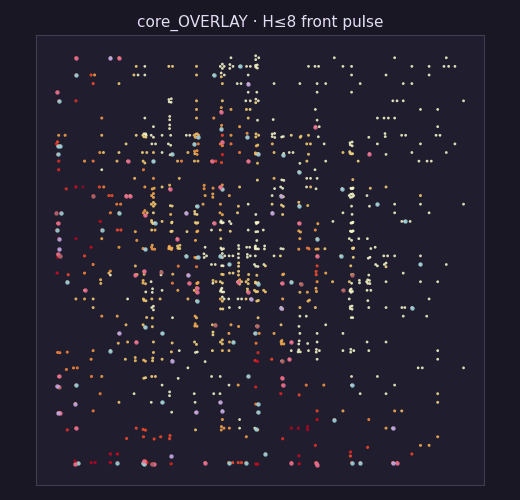
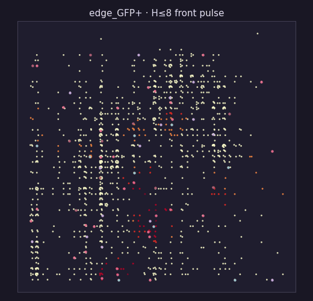
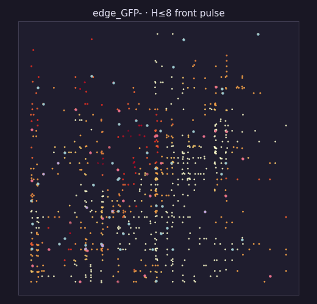
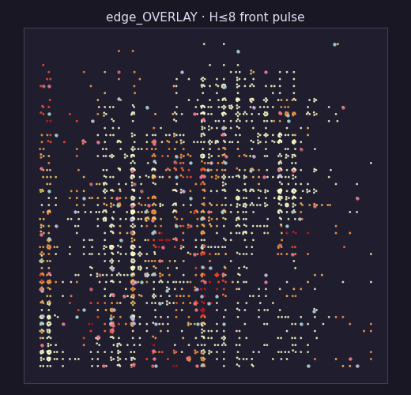
Statistics
| label | metric | obs | null | z | p |
|---|---|---|---|---|---|
| edge_GFP- | enr_deep_exit | nan | nan | nan | nan |
| edge_GFP- | enr_enter_exit | 1.02 | 0.948 | 0.53 | 0.27 |
| edge_GFP- | contact_deep_exit | nan | nan | nan | nan |
| edge_GFP- | front_score | 0.0373 | 0.0329 | 1.26 | 0.096 |
| edge_GFP+ | enr_deep_exit | 1.38 | 1.11 | 0.38 | 0.439 |
| edge_GFP+ | enr_enter_exit | 1.61 | 1.11 | 1.15 | 0.126 |
| edge_GFP+ | contact_deep_exit | 0.3 | 0.211 | 0.69 | 0.359 |
| edge_GFP+ | front_score | 0.0129 | 0.00848 | 1.50 | 0.0675 |
| edge_OVERLAY | enr_deep_exit | 1.25 | 0.981 | 0.95 | 0.205 |
| edge_OVERLAY | enr_enter_exit | 1.12 | 0.971 | 1.06 | 0.147 |
| edge_OVERLAY | contact_deep_exit | 0.643 | 0.546 | 0.73 | 0.322 |
| edge_OVERLAY | front_score | 0.0246 | 0.0203 | 1.91 | 0.0335 |
| core_GFP- | enr_deep_exit | nan | nan | nan | nan |
| core_GFP- | enr_enter_exit | 1.39 | 1.11 | 1.61 | 0.0495 |
| core_GFP- | contact_deep_exit | nan | nan | nan | nan |
| core_GFP- | front_score | 0.0839 | 0.0741 | 1.20 | 0.093 |
| core_GFP+ | enr_deep_exit | 0.986 | 1.05 | -0.19 | 0.623 |
| core_GFP+ | enr_enter_exit | 1.13 | 1.04 | 0.42 | 0.346 |
| core_GFP+ | contact_deep_exit | 0.818 | 0.573 | 1.57 | 0.104 |
| core_GFP+ | front_score | 0.0359 | 0.032 | 0.95 | 0.175 |
| core_OVERLAY | enr_deep_exit | 1 | 1.12 | -0.47 | 0.699 |
| core_OVERLAY | enr_enter_exit | 1.19 | 1.12 | 0.57 | 0.29 |
| core_OVERLAY | contact_deep_exit | 0.75 | 0.84 | -0.82 | 0.875 |
| core_OVERLAY | front_score | 0.0658 | 0.0571 | 2.41 | 0.0025 |